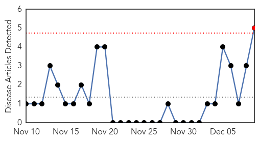
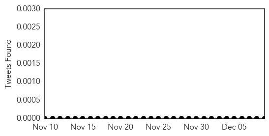

30 Day Trends
Web: 1 alerts, 0 warnings
Twitter: 0 alerts, 0 warnings
Top Articles:
- 0.909
- Keep your germs at home, please
- 0.858
- Whooping Cough Outbreak at Massachusetts High School Affected Only Vaccinated Students
- 0.794
- Whooping cough outbreak sickens 10,000 in California
- 0.700
- Whooping Cough Back With a Vengeance in California
- 0.562
- Requiring vaccinations for all who have contact with newborns is on the rise
Top Tweets:
-
No tweets found for Dec 09, 2014
Web/News Articles
Tweets
Article Locations

Article Confidences